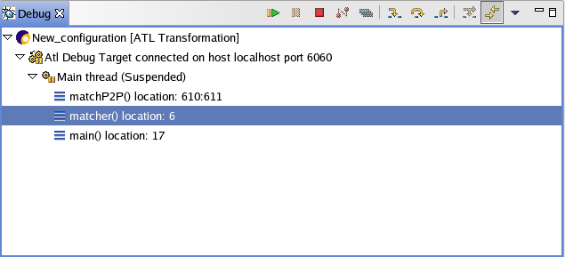
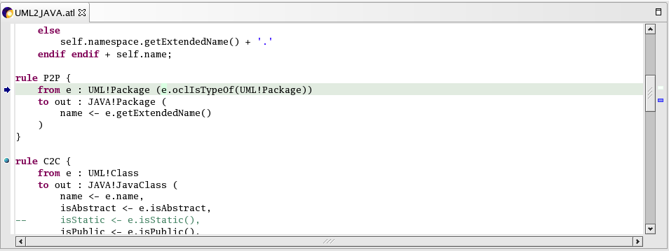
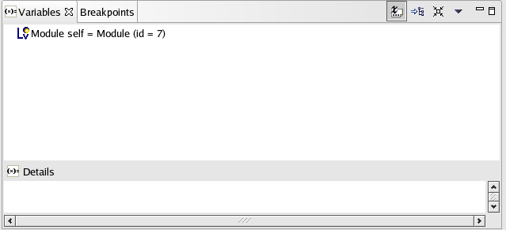
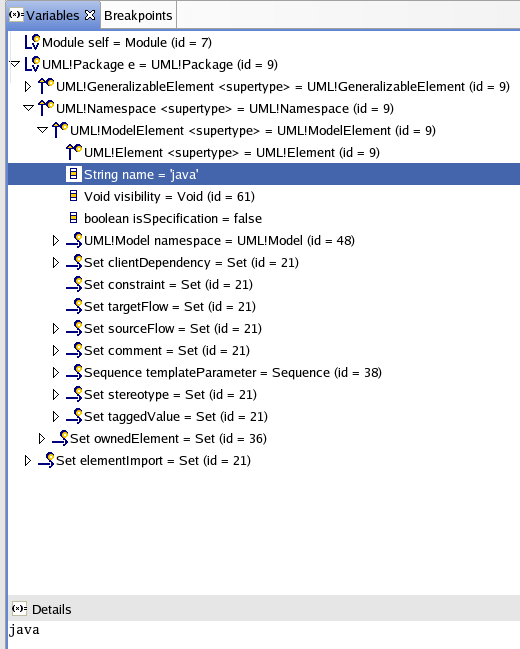
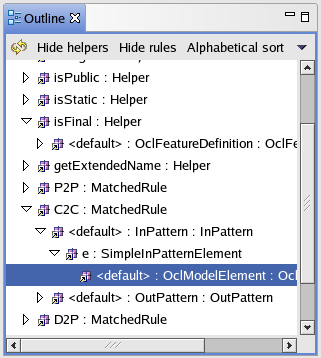
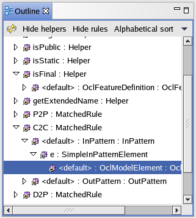
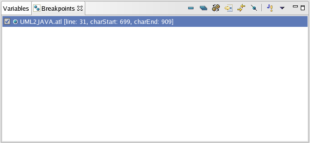

In this section, you will learn more about debugging ATL transformations in the workbench. In debug mode, execution may be suspended and resumed, breapoints added, and you can see the variables of the stackframes.
If you're in the Resource perspective, switch to the Debug perspective (Window). For the moment, action "Run" and "Debug" are only available in this perspective.
In order to debug your ATL transformation, use the drop-down Debug menu in the toolbar and select Debug....
This time, the Launch Configurations dialog opens. A launch
configuration allows you to configure how a program is launched,
including its arguments, and other options.
In Debug mode, there is two type of launch configuration : ATL
configuration and Remote ATL configuration. The last was useful when
you want to launch the debuggee out of Eclipse (for example, if your
transformation needs injector or extractor, the ATL configuration
cannot be used but with Remote ATL configuration it's possible).
Otherwise, you can use the ATL configuration when you have a project
with input and output models, input and output metamodels, it's easier
to use than remote ATL configuration.
See ATL configuration or Remote ATL configuration pages to know more about the creation of launch configuration.
When your ATL configuration is finished, you can debug the ATL transformation (Button "Debug" in ATL Configuration).
There is several important views in the debug perspective.

In this view, you see the different configurations launched with their state. For each configuration, there is the debug target, threads and stackframes.
At the beginning, the transformation is suspended. If you click on
resume button in button view, it will run until the breakpoint is
reached. When the breakpoint is hit, execution is suspended. Notice
that the process is still active (not terminated) in the Debug view.
To step through the code, click the Step Over
button. Execution will continue at the next line in the same
method (or, if you are at the end of a method, it will continue in the
method from which the current method was called).
Try some other step buttons (Step Into, Step Return) to
step through the code. Note the differences in stepping
techniques.
You can end a debugging session by allowing the program to run to
completion or by terminating it.
You can continue to step over the code with the Step buttons
until the program completes.
You can click the Resume button to allow the
program to run until the next breakpoint is encountered or until the
program is completed.
You can select Terminate from the context menu of the
program's process in the Debug view to terminate the program.
When an exception arrived, you can see it on the debug view. The
exception is displayed in thread line, just after the state.
For more details, see Debug view page.

In the editor view, you can see the code being debugged, the breapoint. On each step, you see the highlighted text changed.

The Variable view displays the values of the variables in the selected stack frame. You can expand the tree in the Variables view. The variables in the Variable view will change when you step in the Debug view.

 

See Outline View page to have more information on outline view.
To sum up, to put a breakpoint expand the tree and select the wanted element. Make a right click and choose "add breakpoint" in the context menu.
(See JDT reference Breakpoint view)

The Breakpoints view lists all the breakpoints you have set in the workbench projects. You can double-click a breakpoint to display its location in the editor. In this view, you can also enable or disable breakpoints, delete them, or add new ones.
When terminated state appears in the debug view, the transformation has finished its work. Now, you can create another launch configuration.
As you can see, the ATL debugger in Eclipse it's like the Java debugger. There more informations Java Development User Guide, see Debugging your programs (for Java Application).